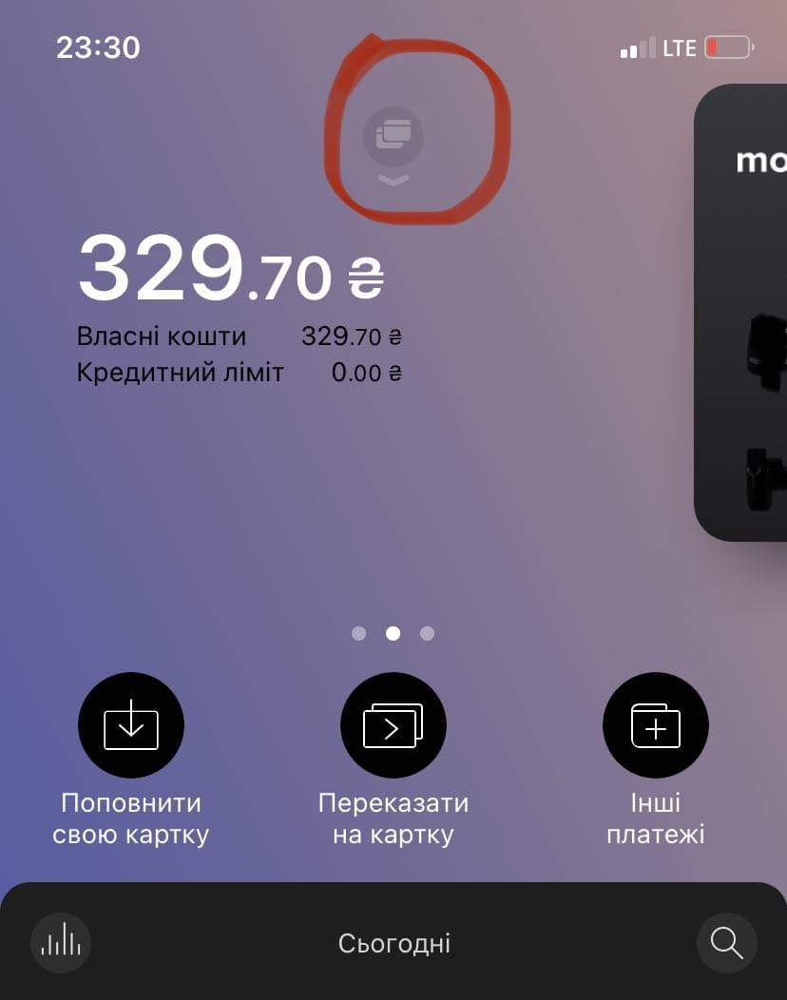
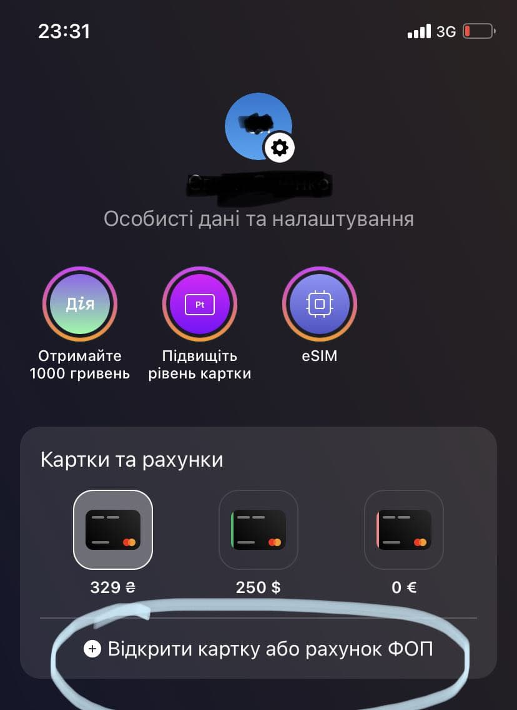
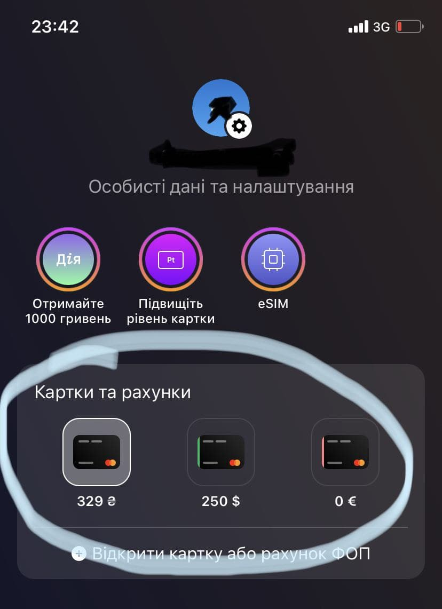
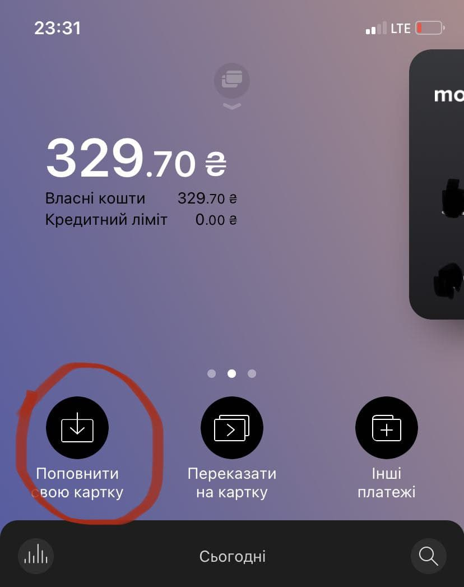
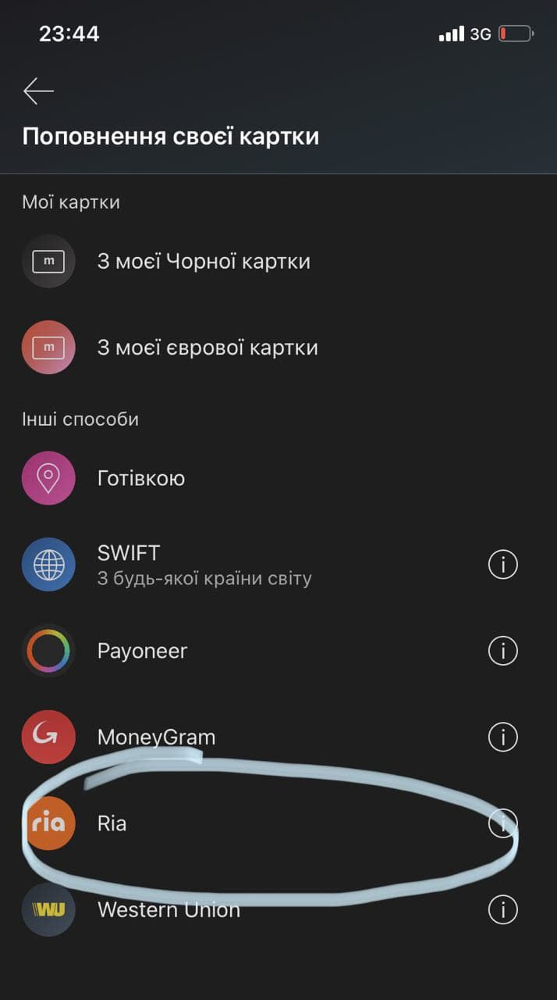
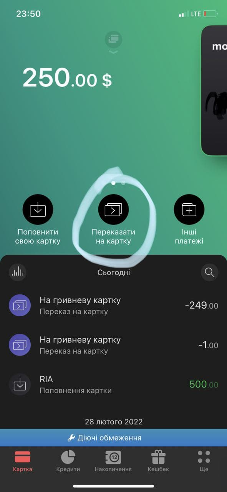
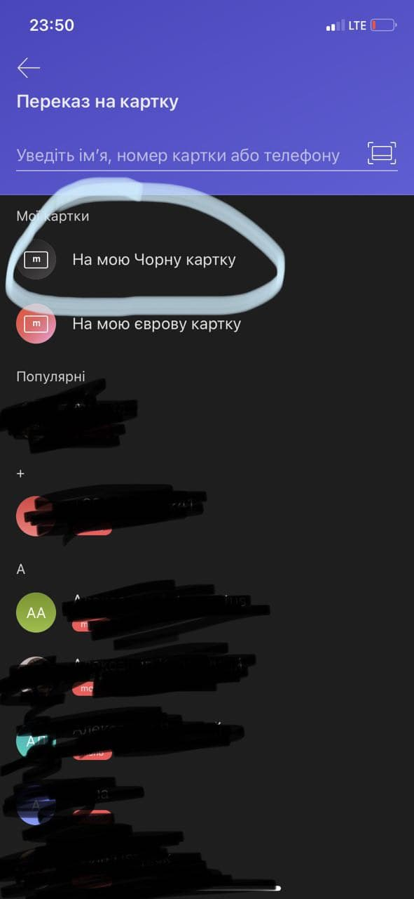

Для пересылки в долларах необходимо открыть валютную карту в приложении Монобанка. Эта карта виртуальная. Не нужно никуда идти в банковское отделение, фотографировать и загружать фото паспорта, открывается бесплатно в приложении. Передайте другу ваши данные. Они все должны быть набраны латинскими буквами:
Имя и Фамилия латинскими буквами как на банковской карте
номер мобильного телефона
адрес проживания
имейл, если хотите получать оповещения
Получение
В верхней части приложения выберите опцию карты:

Нажмите на кнопку “Відкрити карту або ФОП”

Выберите карту в $ долларах, и затем подтвердите ваш выбор и пользовательское соглашение. Ваша карта готова. Теперь вы можете переключаться с гривневой карты на долларовую…

Выберите долларовую карту. Нажмите на кнопку в меню «Пополнить карту»

Выберите вид системы перевода RIA:

Введите номер транзакции и нажать Найти перевод и зачислить на карту. Перевод зачисляется в течении нескольких минут.
Затем, доллары можно перечислить на свою гривневую карту Монобанка:
Выбрать долларовую карту и затем нажать на опцию Переказатиина карту

Выбрать На Черную (гривневую карту) и ввести желаемую сумму для пепевода

Банк переведет вам доллары в гривне по актуальному курсу банка.